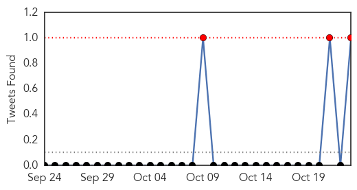

30 Day Trends
Web: 0 alerts, 0 warnings
Twitter: 1 alerts, 0 warnings
Top Articles:
- 0.995
- Hospitals in Asia overwhelmed with growing number of dengue cases
- 0.988
- ICT Health Department says dengue larva breeding will be controlled by mid November
- 0.958
- Perpetual sting: K-P govt’s indifference towards recurring dengue virus questioned
- 0.898
- Youngster dies of dengue fever at HFH
- 0.871
- Dengue Fever Vaccine Candidate
- 0.854
- Contagion: Dengue expert urges comprehensive plan
- 0.820
- KMC’s drive begins amid growing concerns over dengue cases
- 0.812
- Tamil Nadu first in the country in organ transplantation: Minister
- 0.793
- Three-year-old Succumbs to Dengue Fever
- 0.745
- WHO supports NEMA’s relief efforts after Hurricane Joaquin
- 0.665
- Mosquito Season Safety Tips
- 0.583
- Can Yelp help in tracking outbreaks of food poisoning?
- 0.546
- Viet Nam: Healthcare improvement for community to combat to climate change
Top Tweets:
- 0.705
- Flavivirus news: 1076 Dengue Cases Reported This Week in Delhi - NDTV: NDTV1076 Dengue Cases Re... https://t.co/gM4oPA1pMS pathogenposse
- 0.673
- Flavivirus news: Perpetual sting: KP govt's indifference towards recurring dengue virus questio... https://t.co/bFTSfN5Ipm pathogenposse
- 0.501
- Flavivirus news: Dengue Fever Cases Over 26600 in Taiwan - The New Indian Express: WantChinaTim... https://t.co/w3UPWZsrcn pathogenposse
Web/News Articles

Tweets
Article Locations

Article Confidences